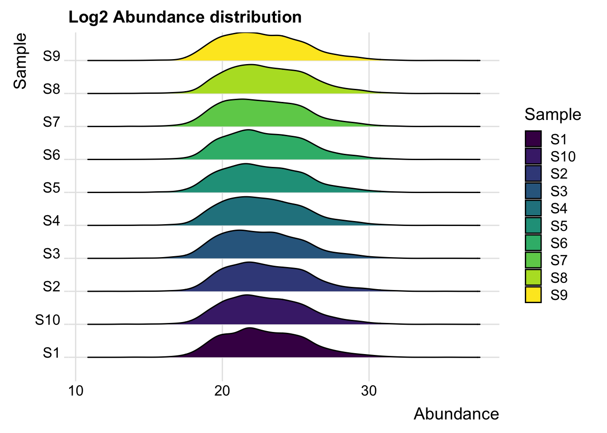
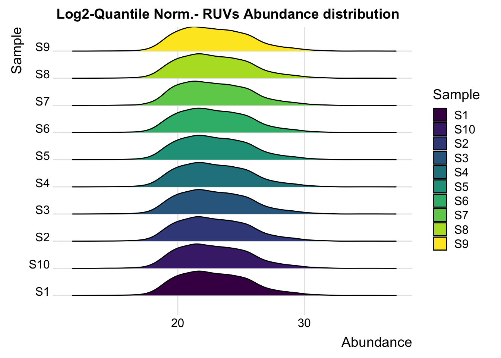
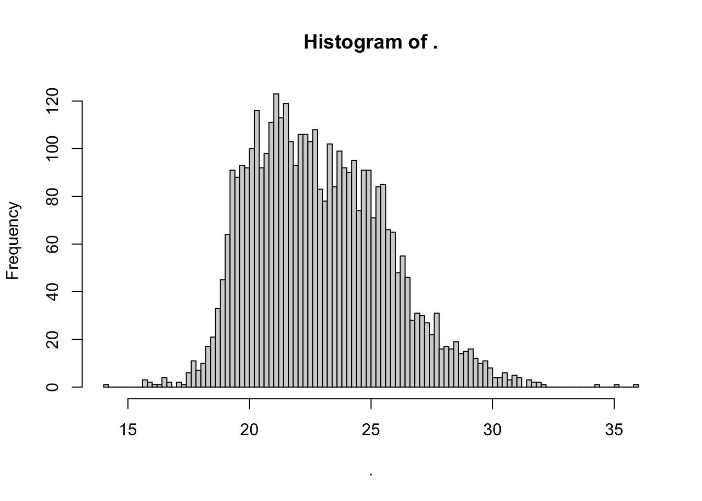
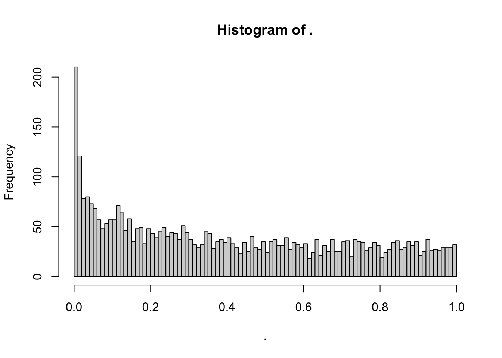
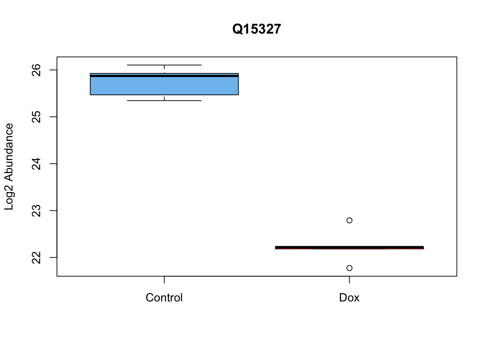
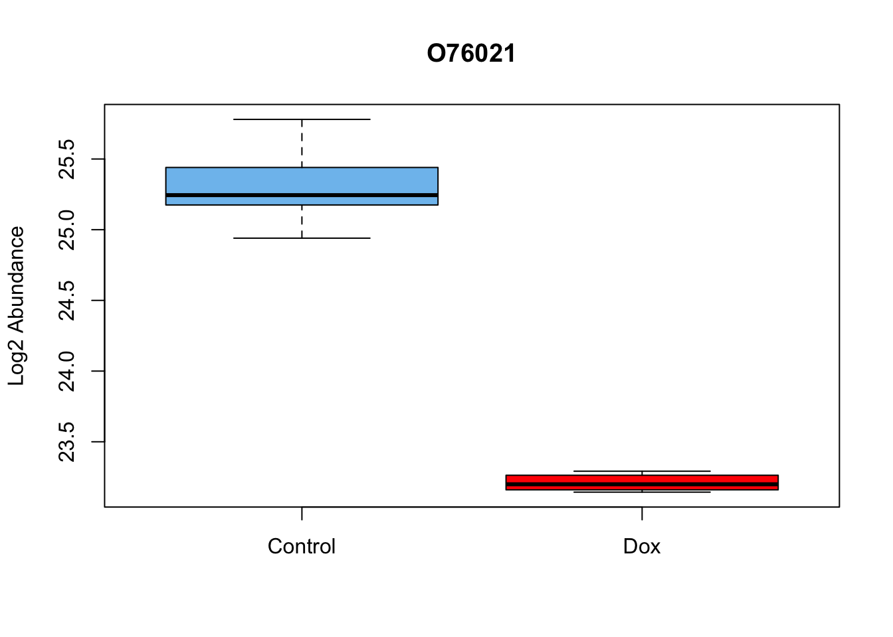
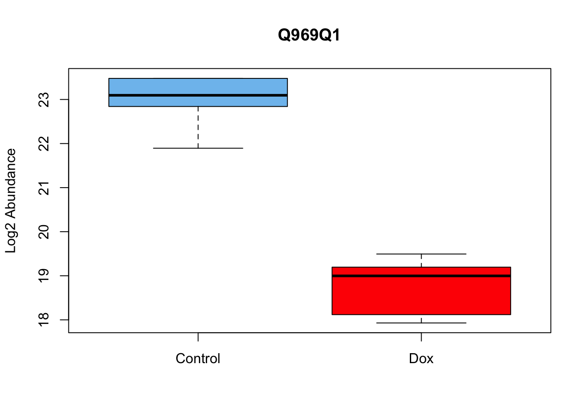

Differentially_abundant_proteins_imputed
2023-12-06
Last updated: 2023-12-05
Checks: 7 0
Knit directory: myproject/
This reproducible R Markdown analysis was created with workflowr (version 1.7.1). The Checks tab describes the reproducibility checks that were applied when the results were created. The Past versions tab lists the development history.
Great! Since the R Markdown file has been committed to the Git repository, you know the exact version of the code that produced these results.
Great job! The global environment was empty. Objects defined in the global environment can affect the analysis in your R Markdown file in unknown ways. For reproduciblity it’s best to always run the code in an empty environment.
The command set.seed(20230911) was run prior to running
the code in the R Markdown file. Setting a seed ensures that any results
that rely on randomness, e.g. subsampling or permutations, are
reproducible.
Great job! Recording the operating system, R version, and package versions is critical for reproducibility.
Nice! There were no cached chunks for this analysis, so you can be confident that you successfully produced the results during this run.
Great job! Using relative paths to the files within your workflowr project makes it easier to run your code on other machines.
Great! You are using Git for version control. Tracking code development and connecting the code version to the results is critical for reproducibility.
The results in this page were generated with repository version 71ac63b. See the Past versions tab to see a history of the changes made to the R Markdown and HTML files.
Note that you need to be careful to ensure that all relevant files for
the analysis have been committed to Git prior to generating the results
(you can use wflow_publish or
wflow_git_commit). workflowr only checks the R Markdown
file, but you know if there are other scripts or data files that it
depends on. Below is the status of the Git repository when the results
were generated:
Ignored files:
Ignored: .DS_Store
Ignored: analysis/.DS_Store
Note that any generated files, e.g. HTML, png, CSS, etc., are not included in this status report because it is ok for generated content to have uncommitted changes.
These are the previous versions of the repository in which changes were
made to the R Markdown
(analysis/Differentially_abundant_proteins_impute.Rmd) and
HTML (docs/Differentially_abundant_proteins_impute.html)
files. If you’ve configured a remote Git repository (see
?wflow_git_remote), click on the hyperlinks in the table
below to view the files as they were in that past version.
| File | Version | Author | Date | Message |
|---|---|---|---|---|
| Rmd | 71ac63b | Omar-Johnson | 2023-12-05 | updating code |
Load Libraries
Added funtions
remove_rows_with_nas <- function(data_frame) {
data_frame[rowSums(is.na(data_frame)) < 5, ]
}Steps
#* 1. Take Abundance values/counts
#* 2. Remove NA values from Abundance values
#* 3. Apply log2 transform to Abundance values
#* 4. Quantile normalize abundance values
#* 5. RUVs applied to account for technical variation
#* 6. Use Limma to model differential protein abundaance Read in Data
# Load your data
Protein_DF <- read.csv(file = "/Users/omarjohnson/Documents/Projects/Dox_Proteomics/Data/Data_Frames/Abundance.csv", header = TRUE)
# Include metadata about samples
Meta <- read.csv(file = "/Users/omarjohnson/Documents/Projects/Dox_Proteomics/Data/Data_Frames/Meta.csv", header = TRUE)Wrangle Data Frame
# Save the original
Full_DF <- Protein_DF
# Subset the columns referring to abundance
Protein_DF_Abundance <- Protein_DF[,c(4, 5:ncol(Protein_DF))]
# Check for duplicated rows
# Identify duplicated values
Protein_DF_Abundance$duplicated_name <- duplicated(Protein_DF_Abundance$Accession)
# This will return a logical vector where TRUE indicates the position of duplicates in the column.
# To see only rows with duplicated values, you can subset the dataframe like this:
duplicated_rows <- Protein_DF_Abundance[Protein_DF_Abundance$duplicated_name == TRUE, ]
print(duplicated_rows) Accession Abundance..F1..Sample..Dox..n.a Abundance..F3..Sample..Dox..n.a
61 P04264 3.87e+08 1.45e+08
276 P35908 NA NA
997 P04040 NA NA
Abundance..F5..Sample..Dox..Dox Abundance..F7..Sample..Dox..Dox
61 2.58e+08 7.07e+08
276 NA NA
997 NA NA
Abundance..F9..Sample..Dox..Dox Abundance..F2..Control..Veh..n.a
61 3.17e+08 1.19e+10
276 NA 5.31e+06
997 NA NA
Abundance..F4..Control..Veh..n.a Abundance..F6..Control..Veh..Veh
61 1.11e+09 8.03e+08
276 1.14e+06 NA
997 NA NA
Abundance..F8..Control..Veh..Veh Abundance..F10..Control..Veh..Veh
61 4.61e+08 5.45e+08
276 5.00e+05 4.90e+05
997 NA NA
duplicated_name
61 TRUE
276 TRUE
997 TRUE# We have 3 rows with duplicates, two of which have NA values. We will remove them now since we will go ahead
# and remove the duplicated rows later on anyways.
Protein_DF_Abundance <- Protein_DF_Abundance[- c(61, 276, 997), ]
# Make rownames of the data frame accession IDs
rownames(Protein_DF_Abundance) <- Protein_DF_Abundance$Accession
# Change colnames
colnames(Protein_DF_Abundance) [1] "Accession" "Abundance..F1..Sample..Dox..n.a"
[3] "Abundance..F3..Sample..Dox..n.a" "Abundance..F5..Sample..Dox..Dox"
[5] "Abundance..F7..Sample..Dox..Dox" "Abundance..F9..Sample..Dox..Dox"
[7] "Abundance..F2..Control..Veh..n.a" "Abundance..F4..Control..Veh..n.a"
[9] "Abundance..F6..Control..Veh..Veh" "Abundance..F8..Control..Veh..Veh"
[11] "Abundance..F10..Control..Veh..Veh" "duplicated_name" Protein_DF_Abundance <- Protein_DF_Abundance[, -c(1, 12)]
# Assuming column names of Protein_DF match with the rows in Meta
rownames(Meta) <- Meta$Samples
colnames(Protein_DF_Abundance) <- Meta$SamplesNA removal and imputing with knn
Protein_DF_Abundance_imp <- remove_rows_with_nas(Protein_DF_Abundance)
Protein_DF_Abundance_imp %>% dim()[1] 3945 10Protein_DF_Abundance_imp_2 <- impute.knn(as.matrix(Protein_DF_Abundance_imp), k = 15, rowmax = 0.4)$dataCluster size 3945 broken into 3 3942
Done cluster 3
Cluster size 3942 broken into 3845 97
Cluster size 3845 broken into 3589 256
Cluster size 3589 broken into 648 2941
Done cluster 648
Cluster size 2941 broken into 2318 623
Cluster size 2318 broken into 1680 638
Cluster size 1680 broken into 1006 674
Done cluster 1006
Done cluster 674
Done cluster 1680
Done cluster 638
Done cluster 2318
Done cluster 623
Done cluster 2941
Done cluster 3589
Done cluster 256
Done cluster 3845
Done cluster 97
Done cluster 3942 Protein_DF_Abundance_imp_2 %>% dim()[1] 3945 10Log2 transform
log2_norm_counts <- log2(Protein_DF_Abundance_imp_2)Quantile Normalization
normalizedData <- limma::normalizeBetweenArrays(log2_norm_counts, method = "quantile")Prepare Data Object for RUVs
# counts need to be integer values and in a numeric matrix
counts <- as.matrix(normalizedData)
# Create a DataFrame for the phenoData
phenoData <- DataFrame(Meta)
# Now create the RangedSummarizedExperiment necessary for RUVs input
set <- SummarizedExperiment(assays = normalizedData, metadata =phenoData)RUVs Matrix
# Generate a background matrix where each set of replicates are in a row
# and null spaces where there are replicate mismatches get the value -1.
# This will be used in the RUVs function, which is the typeII method to
# remove unwanted variation in the RUVs package. This will be used for all
# RUVs permutations where the number of variation factors will be changed.
scIdx <- matrix(-1, nrow = 6, ncol = 3)
scIdx[1, 1:3] <- c(which(colnames(counts) %in% c("S6", "S8", "S10"))) # Control group- Technical reps Ind. 48-1
scIdx[2, 1:3] <- c(which(colnames(counts) %in% c("S5", "S7", "S9"))) # Dox group- Technical reps Ind. 48-1
scIdx[3, 1] <- c(which(colnames(counts) %in% c("S2"))) # Control group- Bio reps Ind. 77-1
scIdx[4, 1] <- c(which(colnames(counts) %in% c("S1"))) # Dox group- 77-1
scIdx[5, 1] <- c(which(colnames(counts) %in% c("S4"))) # Control group- Bio reps Ind. 87-1
scIdx[6, 1] <- c(which(colnames(counts) %in% c("S3"))) # Dox group- 87-1
scIdx [,1] [,2] [,3]
[1,] 8 9 10
[2,] 3 4 5
[3,] 6 -1 -1
[4,] 1 -1 -1
[5,] 7 -1 -1
[6,] 2 -1 -1Linear Modelling
# Apply RUVs function from RUVSeq and add to set object
set <- RUVSeq::RUVs(x = normalizedData, k = 1, scIdx = scIdx, isLog = TRUE)
RUV_1 <- set$W[,1]
set$W W_1
S1 0.13282495
S3 -0.02056889
S5 -0.10573112
S7 0.58331726
S9 -0.60738564
S2 0.12029655
S4 -0.05722375
S6 -0.31416365
S8 -0.08892110
S10 0.42282946phenoData$RUV_1 <- RUV_1
# Create Design Matrix
# phenoData$Cond <- factor(phenoData$Cond , levels = c("Control", "Dox"))
design <- model.matrix(~0 + Cond + RUV_1, phenoData)
design CondControl CondDox RUV_1
S1 0 1 0.13282495
S3 0 1 -0.02056889
S5 0 1 -0.10573112
S7 0 1 0.58331726
S9 0 1 -0.60738564
S2 1 0 0.12029655
S4 1 0 -0.05722375
S6 1 0 -0.31416365
S8 1 0 -0.08892110
S10 1 0 0.42282946
attr(,"assign")
[1] 1 1 2
attr(,"contrasts")
attr(,"contrasts")$Cond
[1] "contr.treatment"# rename columns
colnames(design) <- c('Control', "Dox", "RUV_1")
# Fit model
fit <- lmFit(set$normalizedCounts, design)
fit2 <- eBayes(fit)
# Make contrasts
cm <- makeContrasts(
DoxvNorm = Dox - Control,
levels = design)
# Model with contrasts
fit2 <- contrasts.fit(fit, cm)
fit2 <- eBayes(fit2, robust = TRUE, trend = TRUE)Warning: 3 very small variances detected, have been offset away from zero# Summarize
results_summary <- decideTests(fit2, adjust.method = "none", p.value = 0.05)
summary(results_summary) DoxvNorm
Down 338
NotSig 3383
Up 224Organize toptable
# Toptable summary organized to contain results for all tested proteins
toptable_summary <- topTable(fit2, coef = "DoxvNorm",number = (nrow(set$normalizedCounts )), p.value = 1, adjust.method = "none")
toptable_summary$Protein <- rownames(toptable_summary)Histograms of Abundance and P-values
# log2 transformed abundance values per sample
long_df <- pivot_longer( as.data.frame(log2_norm_counts), cols = everything(), names_to = "Sample", values_to = "Abundance")
ggplot(long_df, aes(x = Abundance, y = Sample, fill = Sample)) +
geom_density_ridges(scale = 0.9) +
labs(x = "Abundance", y = "Sample", title = "Log2 Abundance distribution") +
theme_ridges() +
scale_fill_viridis_d()Picking joint bandwidth of 0.481
# log2-quantile normalized-RUVs- abundance values per sample
quantnormcountmatrix <- as.data.frame(set$normalizedCounts)
long_df <- pivot_longer(quantnormcountmatrix, cols = everything(), names_to = "Sample", values_to = "Abundance")
ggplot(long_df, aes(x = Abundance, y = Sample, fill = Sample)) +
geom_density_ridges(scale = 0.9) +
labs(x = " Abundance", y = "Sample", title = "Log2-Quantile Norm.- RUVs Abundance distribution") +
theme_ridges() +
scale_fill_viridis_d()Picking joint bandwidth of 0.48
# Average expression of log2 quantile normalized values
toptable_summary$AveExpr %>% hist(breaks = 100)
# Nominal Pvalue distribution
toptable_summary$P.Value %>% hist(breaks = 100)
Volcano plots
# 1. Create a column to threshold P-values
toptable_summary <- toptable_summary %>% mutate(threshold_P = P.Value < 0.05)
# 2. Plot
ggplot(toptable_summary)+
geom_point(mapping = aes(x = logFC, y = -log10(P.Value), color = threshold_P))+
xlab("log2FC")+
ylab("-log10 nominal p-value")+
ylim(0, 10)+
xlim(-7, 7)+
theme(legend.position = "none",
plot.title = element_text(size = rel(1.5), hjust = 0.5),
axis.title = element_text(size = rel(1.25)))+
theme_bw()
Boxplots for top 3 most differentially abundant proteins
# View most signifigantly differentially abundant proteins in toptable_summary
toptable_summary[1:3, ] logFC AveExpr t P.Value adj.P.Val B Protein
Q15327 -3.505595 23.99098 -16.28950 1.777999e-08 1.777999e-08 8.884100 Q15327
O76021 -2.102879 24.26381 -13.45453 1.095254e-07 1.095254e-07 7.635253 O76021
Q969Q1 -4.215343 20.85221 -10.23185 1.392972e-06 1.392972e-06 5.627834 Q969Q1
threshold_P
Q15327 TRUE
O76021 TRUE
Q969Q1 TRUE# 1. Plot the first most signifigant diff. abundant protein
quantnormcountmatrix <- as.matrix(quantnormcountmatrix)
boxplot(quantnormcountmatrix["Q15327",] ~ Meta$Cond, data=Meta, main="Q15327",
ylab="Log2 Abundance", xlab="", col = c("skyblue2","red")) 
# 2. Plot the second most signifigant diff. abundant protein
quantnormcountmatrix <- as.matrix(quantnormcountmatrix)
boxplot(quantnormcountmatrix["O76021",] ~ Meta$Cond, data=Meta, main="O76021",
ylab="Log2 Abundance", xlab="", col = c("skyblue2","red")) 
# 3. Plot the third most signifigant diff. abundant protein
quantnormcountmatrix <- as.matrix(quantnormcountmatrix)
boxplot(quantnormcountmatrix["Q969Q1",] ~ Meta$Cond, data=Meta, main="Q969Q1",
ylab="Log2 Abundance", xlab="", col = c("skyblue2","red")) 
PCA before processing
# PCA of log2-quantile normalized-RUVs values:
prcomp_res <- prcomp(t(log2_norm_counts %>% as.matrix()), center = TRUE)
ggplot2::autoplot(prcomp_res, data = Meta, colour = "Cond", shape = "Ind", size =4)+
theme_bw()
PCA after processing
# PCA of log2-quantile normalized-RUVs values:
prcomp_res <- prcomp(t(set$normalizedCounts %>% as.matrix()), center = TRUE)
ggplot2::autoplot(prcomp_res, data = Meta, colour = "Cond", shape = "Ind", size =4)+
theme_bw()
Heatmaps before processing
phenoDataDataFrame with 10 rows and 6 columns
Samples Ind Rep Cond Cond_Ind RUV_1
<character> <character> <character> <character> <character> <numeric>
S1 S1 B_77 Bio Dox B_77_Dox 0.1328249
S3 S3 C_87 Bio Dox C_87_Dox -0.0205689
S5 S5 A_48 Tech Dox A_48_Dox -0.1057311
S7 S7 A_48 Tech Dox A_48_Dox 0.5833173
S9 S9 A_48 Tech Dox A_48_Dox -0.6073856
S2 S2 B_77 Bio Control B_77_Control 0.1202965
S4 S4 C_87 Bio Control C_87_Control -0.0572237
S6 S6 A_48 Tech Control A_48_Control -0.3141636
S8 S8 A_48 Tech Control A_48_Control -0.0889211
S10 S10 A_48 Tech Control A_48_Control 0.4228295pheatmap::pheatmap(log2_norm_counts %>% as.matrix(),
cluster_rows = TRUE,
cluster_cols = TRUE,
show_rownames = FALSE,
show_colnames = TRUE
)
cor(log2_norm_counts %>% as.matrix()) %>% pheatmap(
cluster_rows = TRUE,
cluster_cols = TRUE,
show_rownames = TRUE,
show_colnames = TRUE)
Heatmaps after processing
phenoDataDataFrame with 10 rows and 6 columns
Samples Ind Rep Cond Cond_Ind RUV_1
<character> <character> <character> <character> <character> <numeric>
S1 S1 B_77 Bio Dox B_77_Dox 0.1328249
S3 S3 C_87 Bio Dox C_87_Dox -0.0205689
S5 S5 A_48 Tech Dox A_48_Dox -0.1057311
S7 S7 A_48 Tech Dox A_48_Dox 0.5833173
S9 S9 A_48 Tech Dox A_48_Dox -0.6073856
S2 S2 B_77 Bio Control B_77_Control 0.1202965
S4 S4 C_87 Bio Control C_87_Control -0.0572237
S6 S6 A_48 Tech Control A_48_Control -0.3141636
S8 S8 A_48 Tech Control A_48_Control -0.0889211
S10 S10 A_48 Tech Control A_48_Control 0.4228295pheatmap::pheatmap(set$normalizedCounts %>% as.matrix(),
cluster_rows = TRUE,
cluster_cols = TRUE,
show_rownames = FALSE,
show_colnames = TRUE
)
cor(set$normalizedCounts %>% as.matrix()) %>% pheatmap(
cluster_rows = TRUE,
cluster_cols = TRUE,
show_rownames = TRUE,
show_colnames = TRUE)
sessionInfo()R version 4.2.0 (2022-04-22)
Platform: x86_64-apple-darwin17.0 (64-bit)
Running under: macOS Big Sur/Monterey 10.16
Matrix products: default
BLAS: /Library/Frameworks/R.framework/Versions/4.2/Resources/lib/libRblas.0.dylib
LAPACK: /Library/Frameworks/R.framework/Versions/4.2/Resources/lib/libRlapack.dylib
locale:
[1] en_US.UTF-8/en_US.UTF-8/en_US.UTF-8/C/en_US.UTF-8/en_US.UTF-8
attached base packages:
[1] grid stats4 stats graphics grDevices utils datasets
[8] methods base
other attached packages:
[1] impute_1.70.0
[2] WGCNA_1.72-1
[3] fastcluster_1.2.3
[4] dynamicTreeCut_1.63-1
[5] BioNERO_1.4.2
[6] reshape2_1.4.4
[7] ggridges_0.5.4
[8] biomaRt_2.52.0
[9] ggvenn_0.1.10
[10] UpSetR_1.4.0
[11] DOSE_3.22.1
[12] variancePartition_1.26.0
[13] clusterProfiler_4.4.4
[14] pheatmap_1.0.12
[15] qvalue_2.28.0
[16] Homo.sapiens_1.3.1
[17] TxDb.Hsapiens.UCSC.hg19.knownGene_3.2.2
[18] org.Hs.eg.db_3.15.0
[19] GO.db_3.15.0
[20] OrganismDbi_1.38.1
[21] GenomicFeatures_1.48.4
[22] AnnotationDbi_1.58.0
[23] cluster_2.1.4
[24] ggfortify_0.4.16
[25] lubridate_1.9.2
[26] forcats_1.0.0
[27] stringr_1.5.0
[28] dplyr_1.1.2
[29] purrr_1.0.2
[30] readr_2.1.4
[31] tidyr_1.3.0
[32] tibble_3.2.1
[33] ggplot2_3.4.3
[34] tidyverse_2.0.0
[35] RColorBrewer_1.1-3
[36] RUVSeq_1.30.0
[37] edgeR_3.38.4
[38] limma_3.52.4
[39] EDASeq_2.30.0
[40] ShortRead_1.54.0
[41] GenomicAlignments_1.32.1
[42] SummarizedExperiment_1.26.1
[43] MatrixGenerics_1.8.1
[44] matrixStats_1.0.0
[45] Rsamtools_2.12.0
[46] GenomicRanges_1.48.0
[47] Biostrings_2.64.1
[48] GenomeInfoDb_1.32.4
[49] XVector_0.36.0
[50] IRanges_2.30.1
[51] S4Vectors_0.34.0
[52] BiocParallel_1.30.4
[53] Biobase_2.56.0
[54] BiocGenerics_0.42.0
[55] workflowr_1.7.1
loaded via a namespace (and not attached):
[1] rappdirs_0.3.3 rtracklayer_1.56.1 minet_3.54.0
[4] R.methodsS3_1.8.2 coda_0.19-4 bit64_4.0.5
[7] knitr_1.43 aroma.light_3.26.0 DelayedArray_0.22.0
[10] R.utils_2.12.2 rpart_4.1.19 data.table_1.14.8
[13] hwriter_1.3.2.1 KEGGREST_1.36.3 RCurl_1.98-1.12
[16] doParallel_1.0.17 generics_0.1.3 preprocessCore_1.58.0
[19] callr_3.7.3 RhpcBLASctl_0.23-42 RSQLite_2.3.1
[22] shadowtext_0.1.2 bit_4.0.5 tzdb_0.4.0
[25] enrichplot_1.16.2 xml2_1.3.5 httpuv_1.6.11
[28] viridis_0.6.4 xfun_0.40 hms_1.1.3
[31] jquerylib_0.1.4 evaluate_0.21 promises_1.2.1
[34] fansi_1.0.4 restfulr_0.0.15 progress_1.2.2
[37] caTools_1.18.2 dbplyr_2.3.3 htmlwidgets_1.6.2
[40] igraph_1.5.1 DBI_1.1.3 ggnewscale_0.4.9
[43] backports_1.4.1 annotate_1.74.0 aod_1.3.2
[46] deldir_1.0-9 vctrs_0.6.3 abind_1.4-5
[49] cachem_1.0.8 withr_2.5.0 ggforce_0.4.1
[52] checkmate_2.2.0 treeio_1.20.2 prettyunits_1.1.1
[55] ape_5.7-1 lazyeval_0.2.2 crayon_1.5.2
[58] genefilter_1.78.0 labeling_0.4.2 pkgconfig_2.0.3
[61] tweenr_2.0.2 nlme_3.1-163 nnet_7.3-19
[64] rlang_1.1.1 lifecycle_1.0.3 downloader_0.4
[67] filelock_1.0.2 BiocFileCache_2.4.0 rprojroot_2.0.3
[70] polyclip_1.10-4 graph_1.74.0 Matrix_1.5-4.1
[73] aplot_0.2.0 NetRep_1.2.7 boot_1.3-28.1
[76] base64enc_0.1-3 GlobalOptions_0.1.2 whisker_0.4.1
[79] processx_3.8.2 png_0.1-8 viridisLite_0.4.2
[82] rjson_0.2.21 bitops_1.0-7 getPass_0.2-2
[85] R.oo_1.25.0 ggnetwork_0.5.12 KernSmooth_2.23-22
[88] blob_1.2.4 shape_1.4.6 jpeg_0.1-10
[91] gridGraphics_0.5-1 scales_1.2.1 memoise_2.0.1
[94] magrittr_2.0.3 plyr_1.8.8 gplots_3.1.3
[97] zlibbioc_1.42.0 compiler_4.2.0 scatterpie_0.2.1
[100] BiocIO_1.6.0 clue_0.3-64 intergraph_2.0-3
[103] lme4_1.1-34 cli_3.6.1 patchwork_1.1.3
[106] ps_1.7.5 htmlTable_2.4.1 Formula_1.2-5
[109] mgcv_1.9-0 MASS_7.3-60 tidyselect_1.2.0
[112] stringi_1.7.12 highr_0.10 yaml_2.3.7
[115] GOSemSim_2.22.0 locfit_1.5-9.8 latticeExtra_0.6-30
[118] ggrepel_0.9.3 sass_0.4.7 fastmatch_1.1-4
[121] tools_4.2.0 timechange_0.2.0 parallel_4.2.0
[124] circlize_0.4.15 rstudioapi_0.15.0 foreign_0.8-84
[127] foreach_1.5.2 git2r_0.32.0 gridExtra_2.3
[130] farver_2.1.1 ggraph_2.1.0 digest_0.6.33
[133] BiocManager_1.30.22 networkD3_0.4 Rcpp_1.0.11
[136] broom_1.0.5 later_1.3.1 httr_1.4.7
[139] ComplexHeatmap_2.12.1 GENIE3_1.18.0 Rdpack_2.5
[142] colorspace_2.1-0 XML_3.99-0.14 fs_1.6.3
[145] splines_4.2.0 statmod_1.5.0 yulab.utils_0.0.8
[148] RBGL_1.72.0 tidytree_0.4.5 graphlayouts_1.0.0
[151] ggplotify_0.1.2 xtable_1.8-4 jsonlite_1.8.7
[154] nloptr_2.0.3 ggtree_3.4.4 tidygraph_1.2.3
[157] ggfun_0.1.2 R6_2.5.1 Hmisc_5.1-0
[160] pillar_1.9.0 htmltools_0.5.6 glue_1.6.2
[163] fastmap_1.1.1 minqa_1.2.5 codetools_0.2-19
[166] fgsea_1.22.0 utf8_1.2.3 sva_3.44.0
[169] lattice_0.21-8 bslib_0.5.1 network_1.18.1
[172] pbkrtest_0.5.2 curl_5.0.2 gtools_3.9.4
[175] interp_1.1-4 survival_3.5-7 statnet.common_4.9.0
[178] rmarkdown_2.24 munsell_0.5.0 GetoptLong_1.0.5
[181] DO.db_2.9 GenomeInfoDbData_1.2.8 iterators_1.0.14
[184] gtable_0.3.4 rbibutils_2.2.15